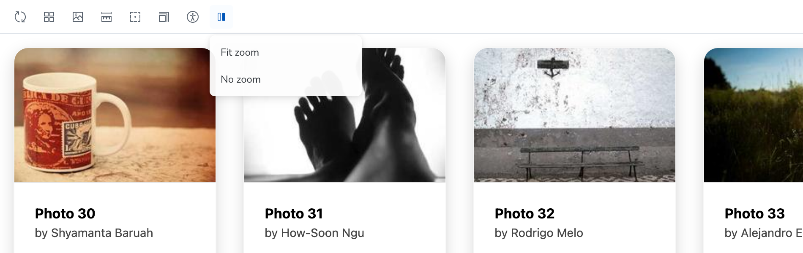
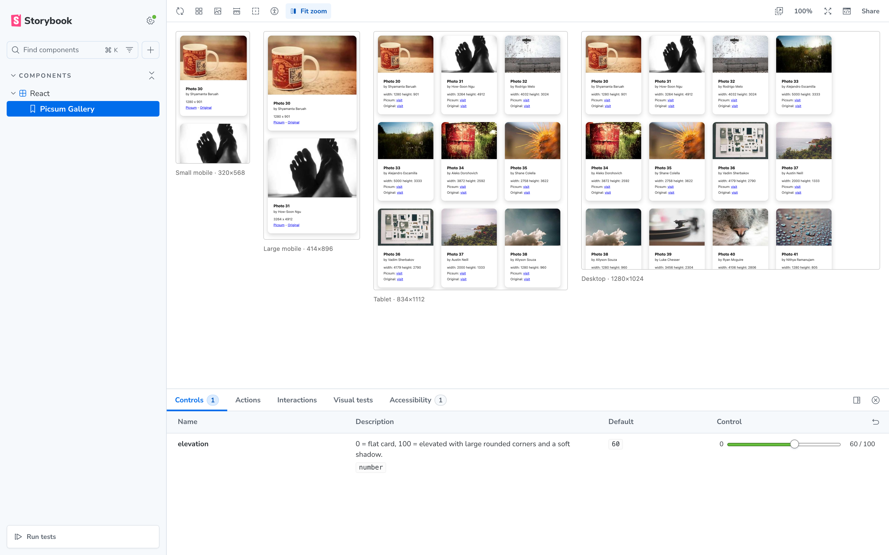
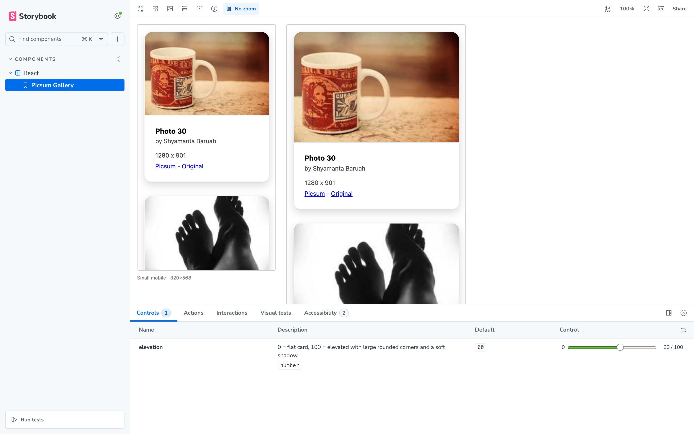

What it does
Real iframes
Each viewport is a true iframe, so media queries and viewport-unit CSS actually behave at that width — no fake resizing.
Fit or no zoom
Choose Fit zoom to scale every frame into the available width, or No zoom to inspect them at natural size.
Zero config
One line in main.ts. It uses the viewports you already configured for the core viewport addon, and a toolbar dropdown to switch.
Getting started
Install the addon as a dev dependency:
npm install --save-dev storybook-addon-multi-preview
# or: bun add / pnpm add / yarn add -D storybook-addon-multi-previewRegister it in your Storybook config:
// .storybook/main.ts
const config = {
// …your existing settings and addons
addons: ['storybook-addon-multi-preview'],
};
export default config;That's it. Storybook 10 auto-wires the addon's manager and preview code — restart the dev server and look for the split-screen icon in the toolbar.
Toolbar
- Fit zoom — the default. Each frame is scaled to fit the preview area, so every viewport is visible at once.
- No zoom — frames render at natural size, ideal for pixel-level inspection.
- The selected mode is shown next to the toolbar icon, just like the core viewport tool.
- Disable multi-preview — the dropdown's reset item turns the compare grid off and returns to the normal single preview.
Configuration
Tune per story or per project with the multiPreview parameter:
| Parameter | Type | Default | Description |
|---|---|---|---|
multiPreview.disable | boolean | false | Turn the addon off for specific stories or the whole project. |
multiPreview.viewports | string[] | all viewports | Keys of parameters.viewport.options to render. |
multiPreview.zoom | number | 'fit' | 'none' | 'fit' | Scale of each frame. A number is used as-is; the toolbar's “No zoom” takes precedence when selected. |
multiPreview.gap | number | 24 | Gap between frames, in px. |
multiPreview.padding | number | 16 | Padding around the row, in px. |
Screenshots
The real thing, in action:



Contributing
Contributions are very welcome! Whether it's a bug report, a feature idea, documentation improvements, or a pull request — every bit of help is appreciated.
- Found a bug or have a suggestion? Open an issue.
- Want to contribute code? See CONTRIBUTING.md — development happens on the
devbranch; pull requests targetingdevare reviewed and merged for each release.